Appendage Antics
Every screen that has been built, what it is for, and how the pieces fit together — the e-book series, the competition, and the membership tiers, working as one platform.
How to read this
This is a working prototype of Appendage Antics — a clickable model of the whole platform, built so you can see the idea rather than imagine it.
Everything in the pages that follow is real in the sense that matters: you can click it, move through it, and see how a member would experience the thing end to end. What sits behind it is not. There are no payments, no video hosting and no identity checks wired up — those are the parts that need a bank, a vendor and a budget, and they are named honestly on screen wherever you would expect them.
The tour runs in three parts, in the order a real person meets them: the public site anyone can browse, the Members' Lounge behind the paywall, and the Control Room your staff would run the operation from.
The prototype is live — go and click it
Reading about it is the slow way round. Every screen in this tour is a real page you can open, and nothing you do in there can break anything.
It opens in the same window — use your browser's back button to return here. You will meet an age check first; that is the platform doing its job.
The doorway
Two things happen before anyone sees a single page, and both exist because the platform is R18.
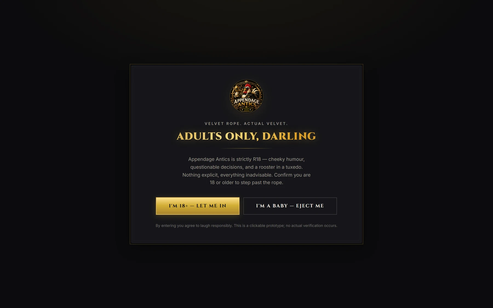
The age gate is a hard stop, not a banner. Nothing behind it renders until it is answered, which is what an R18 platform is expected to do and what a payment provider will ask you to demonstrate.
The public site
What anyone can see without paying: the books, the competition, the prize board, the live gallery and the tiers. Its whole job is to turn a curious visitor into a Volume One buyer — because buying the book is what opens the door to everything else.
Home
/The front page has one job: explain a fairly unusual proposition in about eight seconds, and point at the one action that starts everything.
The proposition is genuinely three things at once — a book series, a video competition and a membership — and that is a lot to land at once. So the page introduces them in dependency order rather than importance order: the book comes first because it is the cheapest thing to say yes to and it is the key to the rest.
- The hero. The brand, the promise, and a single gold call to action. Only one button on this screen is gold; everything else is deliberately quieter, so the eye has somewhere to land.
- How it works. Buy Volume One → get your two accounts → upload your entries → climb the ladder. Four steps, because the mechanic is unusual enough that it needs stating plainly.
- The prize board. The money, up front. This is the single most persuasive fact on the site and it is not buried.
- Live from the gallery. A handful of recent entries, so the platform looks inhabited rather than empty on day one.
- The tiers, in brief. Enough to show there is a ladder, with the detail deferred to the Memberships page.
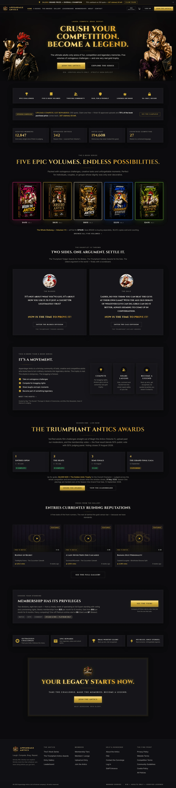
The Series
/booksThe series page has to do something slightly awkward: sell five books while making it unmistakable that only one of them is the way in.
All five volumes are shown as equals in the grid — same treatment, same weight, each with its own accent colour that follows it everywhere else on the platform. But Volume One carries a badge the others do not, and the page says outright that Season One of the Awards is judged entirely from Volume One. Someone who buys Volume Four first because they liked the cover has not made a mistake, but they have not bought their way into the competition either, and finding that out later is a refund.
- The collection. Five covers, five prices, add-to-cart on each. A reader can start anywhere, and the page says so.
- The bundle. All five at a saving — the obvious upsell, given a reader who wants one usually wants the set.
- The competition tie-in. A panel restating that Volume One unlocks entry, with the current phase and the voting deadline live on it.
- What the series actually is. Four short claims — interactive, competitive, communal, and strictly 18+ — because "comedy e-book" undersells a book whose challenges you film.
Volume One
/books/vol-1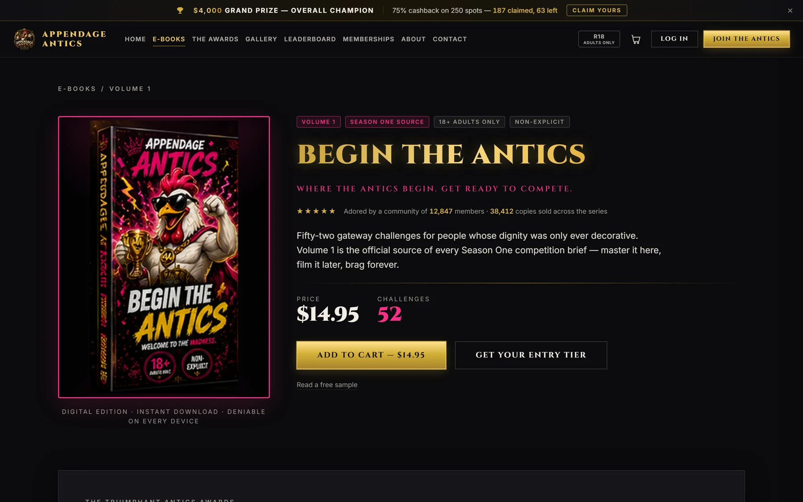
This is the most important page on the public site, and it is built like it. Every other page is ultimately trying to get someone here.
The page assumes a visitor who is interested but not yet convinced, and works through the three things standing between them and a purchase: what is actually in the book, whether it is any good, and what buying it gets them beyond the reading.
- Sample challenges. Three of the twenty, shown in full and word for word from your book. The other seventeen stay sealed. Showing nothing asks for blind trust; showing everything removes the reason to buy — three is enough to prove the tone is funny rather than crude.
- What you're in for. The shape of the book: how many challenges, how they escalate, how they are meant to be used.
- Look inside. Six real pages from the book, spiral binding and all: the cover, page 2 (your disclaimer, still the blank placeholder until your lawyer finishes it), the welcome page and the first three activities.
- Reader verdicts. Social proof, kept short and specific.
- The competition unlock. The purchase is not just a book — it is a ticket, two member accounts, and eligibility for the cashback campaign. Stated here rather than left for the buyer to discover.
- The rest of the series. The onward path, once the important decision has been made.
Volumes Two to Five
/books/vol-2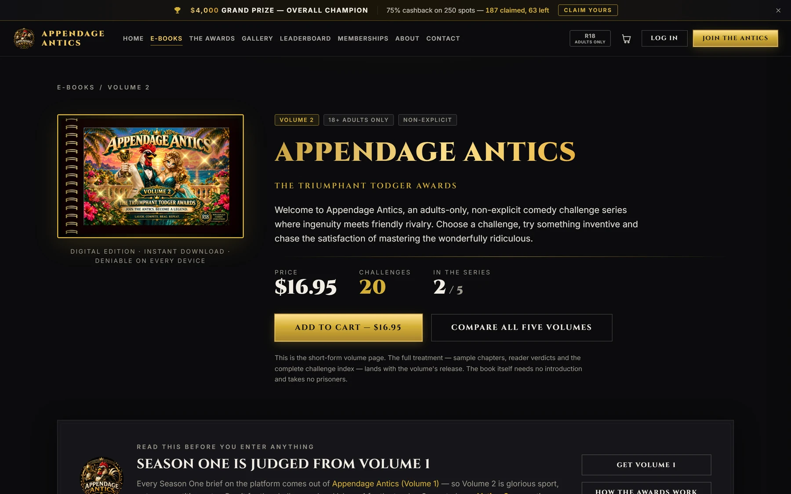
Volumes Two through Five share one page design, filled from each book's own details — cover, accent colour, its twenty challenges (one hundred across the series, numbered 1 to 100 as in your books) and three sample challenges.
They are deliberately lighter than Volume One. Someone reading about Volume Four has almost certainly already bought Volume One; they do not need the competition explained again, they need to know what is in this book and how to get it. Repeating the full pitch on all five pages would dilute the one page that has to convert.
Memberships
/membershipsEight tiers across two divisions, and the page's real job is to make choosing between them feel obvious rather than exhausting.
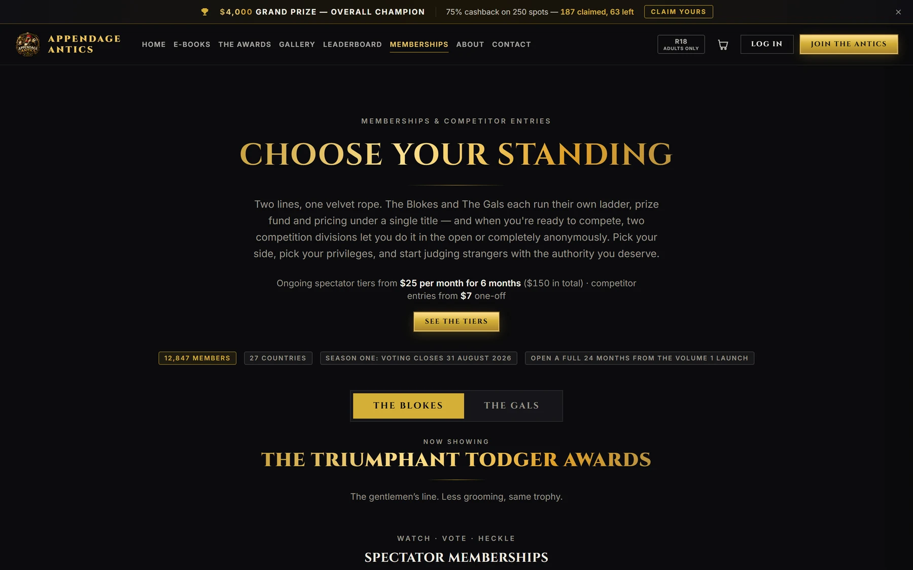
Your two divisions are handled as a switch at the top of the page rather than as separate destinations. It keeps one clean URL to advertise, and it means somebody who lands on the wrong division is one click from the right one instead of lost.
Each tier card carries its name, its monthly price, the total across the six-month commitment, and what the tier actually unlocks. That total is worth stating plainly: a monthly figure alone quietly understates what someone is signing up for, and a member who feels ambushed at month three is a refund request, not a member.
The page ends with the questions that otherwise become support tickets: when billing starts, what the six-month commitment means, how to change tier, and what happens at the end of a term. Answering them here costs a little momentum. Not answering them costs refunds, which are considerably more expensive.
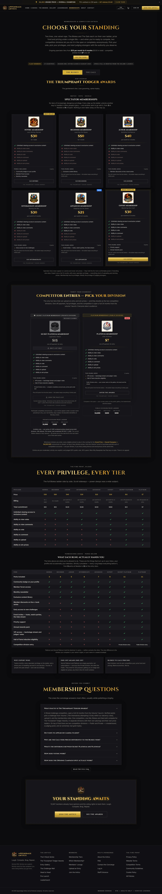
The Competition
/competition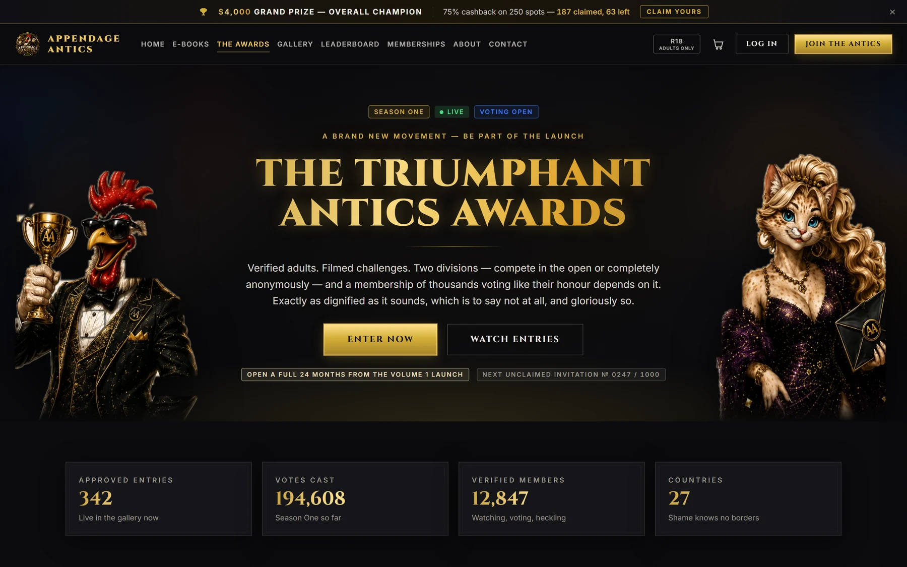
The competition is the most structurally complicated part of the whole proposition, and this page exists to make it feel simple.
The complication is that there are two different things people call "divisions." Blokes and Gals are what you enter — two award shows, each with its own host and its own trophy cabinet. Public and Private are how you enter — in the open, or with your identity sealed behind the gold censor bars. Those are independent choices, and conflating them is the fastest way to lose a reader.
So the page states it in exactly that form, in one line, before showing anything else: Blokes and Gals are what you enter; Public or Private is how you enter it.
- How it works. Five steps from buying Volume One to standing on a podium.
- Entry requirements. Short list, hard rules — verified adult, proof of purchase, your own footage, nothing explicit.
- The two divisions. The Public/Private choice explained as a genuine choice rather than a setting, because for a lot of your likely entrants it is the difference between entering and not.
- The full prize board. Every placing in both shows, plus the overall honours.
- The calendar. Where we are now, when voting closes, and when the gala runs.
The Gallery
/gallery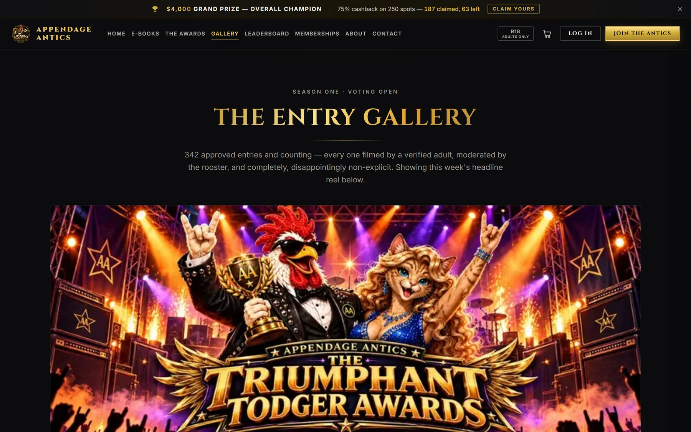
The gallery is where the platform proves it is alive — and where the paywall does its most important work.
Every entry appears as a card. Some are free to watch; most are behind a gold censor bar. That split is the entire commercial argument for a membership, made visually rather than in a sentence: a visitor can see there is a great deal here, and see precisely what they are not getting.
- Filters that work. Division, challenge category, and a free-to-watch toggle — all of which really filter, with a running count of what is showing.
- Sorting. Most votes, newest, most discussed.
- The locked count. A line stating how many of the entries on screen are behind the rope — and it recounts when a filter is applied, rather than repeating a site-wide figure that no longer matches what is visible.
- An empty state with a joke in it. Filter down to nothing and the page has something to say rather than going blank.
A single entry
/entry/:id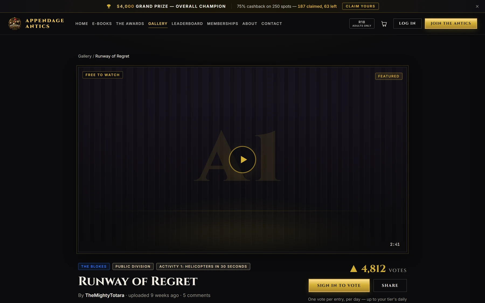
Click any card and you land here: one entry, its entrant, its score, and the conversation around it.
This page is where a casual visitor is most likely to convert, because it is where the paywall stops being an abstraction. The entry is visible. The comments are roped off. The voting paddle is not theirs. Each of those is a specific, felt absence rather than a marketing claim about membership benefits.
- The entry itself — title, entrant, challenge category, division, and how long it has been up.
- Score and votes. Vote counts are themselves a tier perk, so a lower-tier member sees the entry but not the numbers — the gating is layered rather than binary.
- The comment thread, with a clearly-explained rope across it for anyone not entitled to join in.
- More from the gallery — because the goal is a second click, then a third.
The Leaderboard
/leaderboard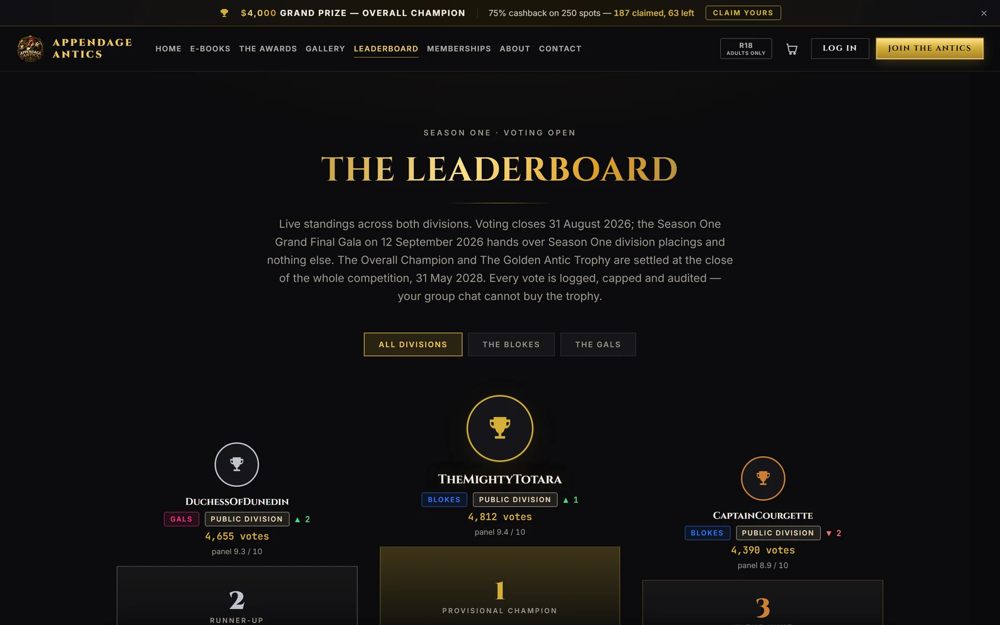
Standings for both divisions, updated as votes come in — and the page that gives members a reason to come back daily.
A leaderboard is the cheapest retention mechanic there is. Someone in fourth place checks whether they are still in fourth place, and they check often. The podium at the top gets the full gold treatment because that is the aspiration the whole page is selling; the ladder below it is deliberately plainer and easier to scan.
- The podium — top three, given real visual weight.
- The full ladder, with movement indicators so a member can see who is climbing.
- Division filters, since Public and Private are ranked separately and a combined list would be meaningless.
- A sticky "you" bar so a signed-in member never has to hunt for their own row.
The Opening Campaign
/promoYour launch offer, given its own page — and treated as the acquisition engine it is rather than a banner.
The mechanic rewards exactly the behaviour a new platform needs most. It does not pay people to sign up; it pays them to fill the gallery. Ten approved uploads from each of the first 250 members is up to two and a half thousand pieces of content, which is the difference between a platform that looks alive on launch day and one that looks abandoned.
- The deal, plainly. Four steps and the qualifying conditions, before any of the celebration.
- What counts as qualifying. Approved uploads only, so "I uploaded ten" and "ten of mine passed moderation" cannot be confused.
- The membership giveaway. A separate launch mechanic, as on your giveaway posters: 31 memberships (20 Newbie, 10 Junior, 1 Expert), with a published draw date. The pre-launch page shows your posters and banners as designed.
The same page also exists inside the Members' Lounge as a personal progress view, so a member can see how many of their ten have been approved. It is the same offer seen from the other side of the sign-in.
The Pre-Launch page
/launch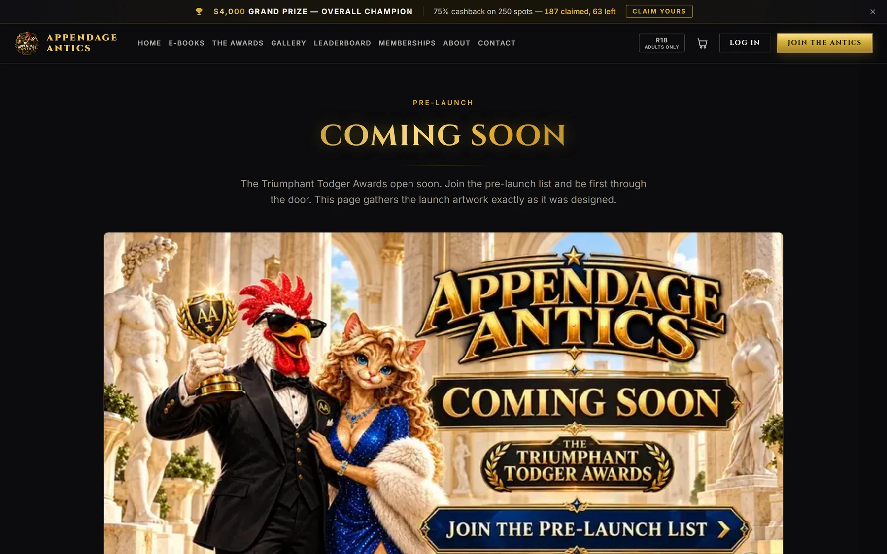
Your own marketing artwork, shown exactly as you designed it, with nothing re-written.
- The coming-soon banner. One of your banners across the top.
- The sign-up form. A short form: name, email and an 18+ tick. Your printed form sits underneath for reference. In this prototype nothing is collected or sent.
- The giveaway. Your 31-membership draw posters (20 Newbie, 10 Junior, 1 Expert).
- The artwork wall. Twenty banners, thirty series posters and all forty giveaway posters, each opening full size. Banners and posters also appear on the home page, the awards page, the gallery, the series page and the opening-campaign page.
The Challenge Wall
/challenges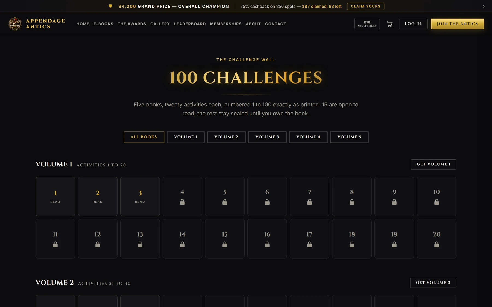
Every activity from your five books as a numbered tile, so a visitor can see how much is in the series without being given the book.
- Open and sealed. The first three activities of each book open and read word for word from your books. The other eighty-five show a lock.
- By volume. Filter to one book, with a way straight to buying it.
- Spin the Antics on the pre-launch page draws one of the open activities at random.
Head to Head
/duel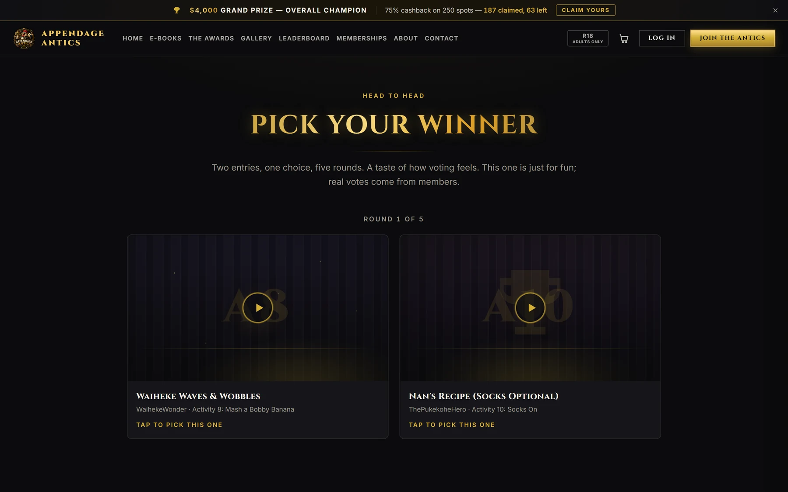
A small game for visitors: two free-to-watch entries, one pick, five rounds, then a tally.
- Nothing is recorded. It is a taster only; real votes need a member account and respect the daily allowance.
- It points onward to the gallery and to joining.
Which Membership?
/quiz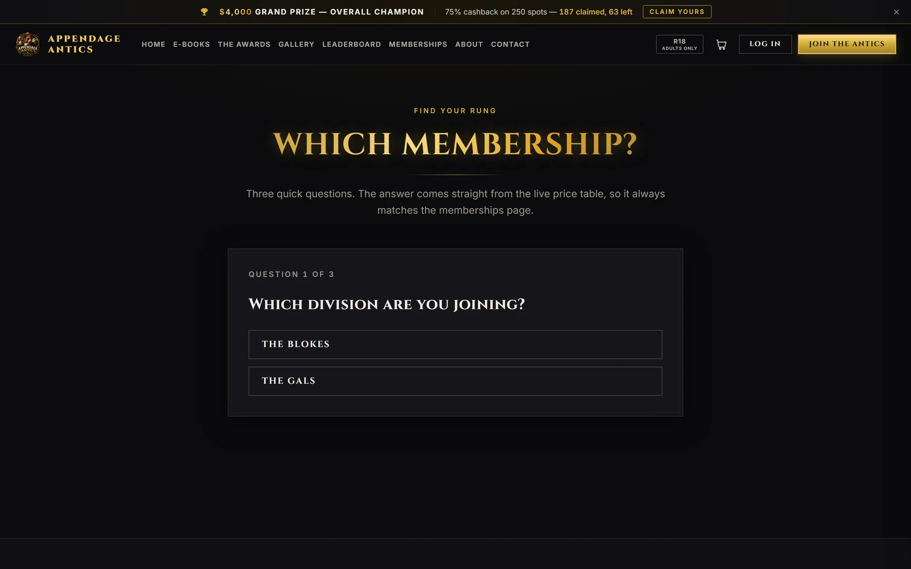
Because eight tiers is a lot to choose between, a short quiz recommends one.
- It reads the price table, so it can never disagree with the memberships page.
- It says why. Where two six-month tiers cover the same period it recommends the cheaper one for that division and shows both totals.
About
/about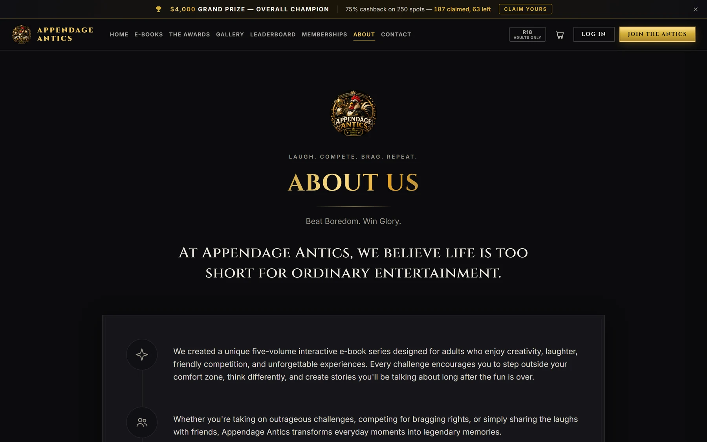
Almost everything on this page is yours. The design's only job was to stop crowding it.
The About copy, the taglines and the framing of the two award shows came from you essentially intact. What the page adds is structure: the story first, then what makes the platform different, then the two shows presented as two stages under one roof, then the division mechanics, then the community numbers.
The two-shows section is the one that needed the most thought. The Blokes and Gals shows are genuinely separate ceremonies with separate branding, and they are also both part of one competition with one set of overall honours. The page presents them side by side as equals under a shared umbrella, so neither reads as the main event and the other as an afterthought.
Frequently asked questions
/faq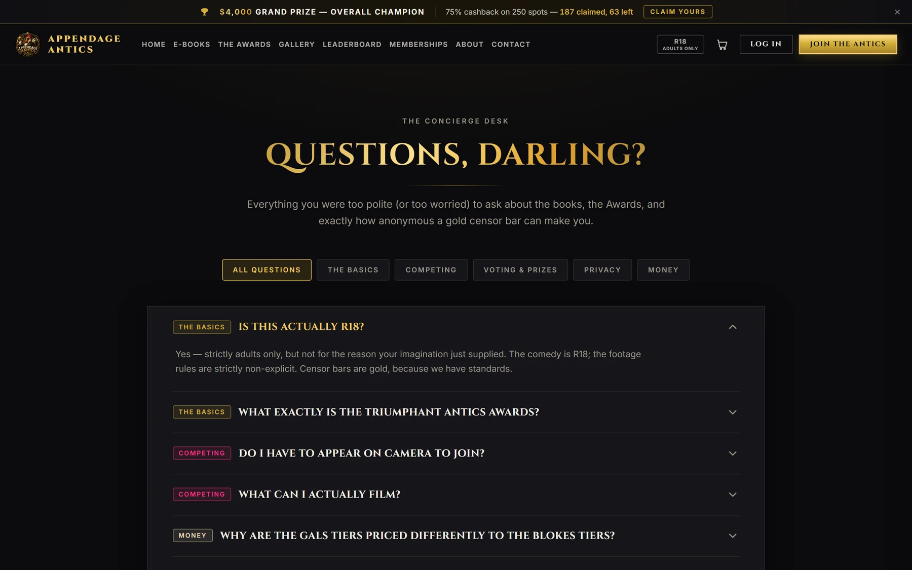
Grouped by subject, written in the house voice, and aimed squarely at the questions that would otherwise end a visit.
An FAQ on a platform like this is not a courtesy page — it is where the two genuinely awkward questions get answered. How anonymous is anonymous? and what exactly am I agreeing to film? A visitor who cannot find clear answers to those does not email support; they close the tab.
So the answers are specific rather than reassuring. What the Private Division does and does not hide, who can see an entry, what happens to footage that is not approved, and what the non-explicit rule means in practice.
Contact
/contact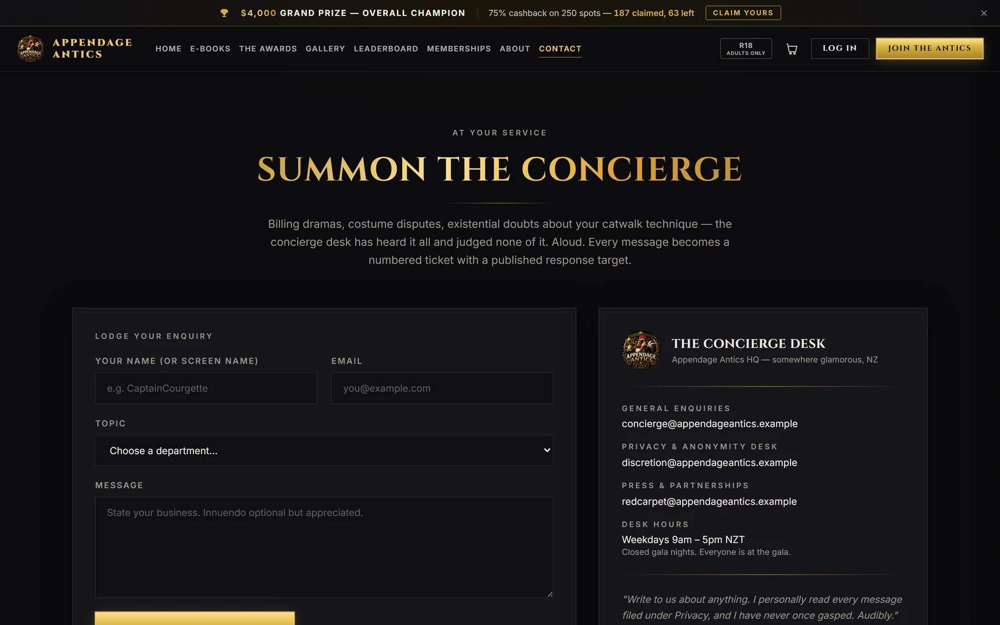
A contact form, a set of categories, and — unusually — a published response target against each one.
Most contact pages promise to get back to you soon. This one states how soon, per category, and says the clock starts when the ticket is created. That is a commitment rather than a pleasantry, and it is worth understanding as one: it is visible on the staff side too, where the support desk is measured against the same targets.
Legal & Compliance
/legal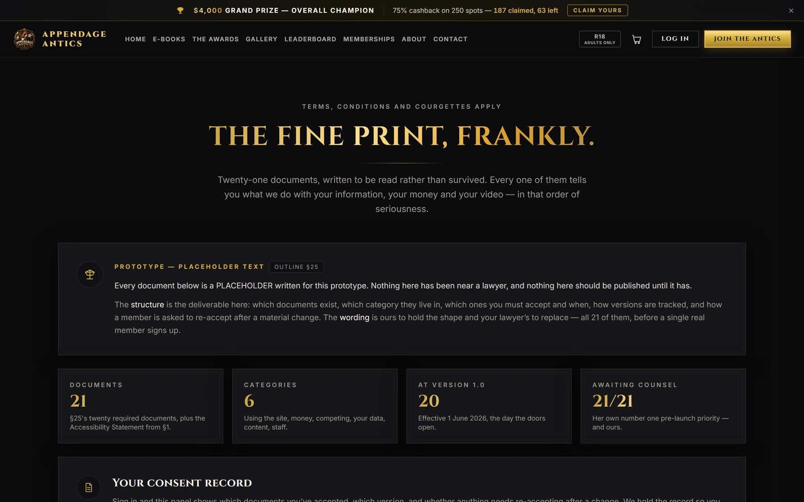
Terms, privacy, content rules, competition terms, complaints, data handling, takedowns — twenty-one documents, organised by what they actually govern rather than dumped in a footer list.
This is the least glamorous part of the build and arguably the most important one commercially. An R18 UGC platform is asking a payment provider, a hosting provider and eventually a regulator to take it seriously. All three look for exactly this, and its absence is the sort of thing that stops an application rather than delaying it.
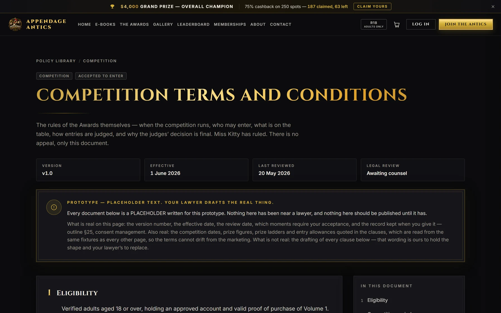
What the documents give you is the structure: every policy a platform like this needs, each with a scope and a shape, ready to hand to a lawyer as a brief rather than a blank page.
Joining & signing in
/register · /login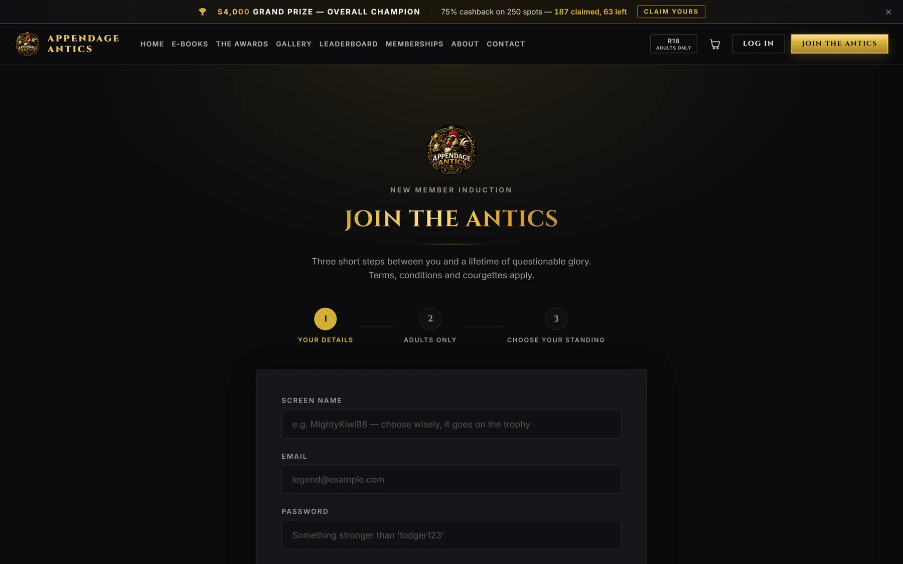
Registration has to carry one genuinely unusual rule, and it carries it in the open.
Your two-accounts-per-purchase mechanic is a good idea — it is how a solo buyer brings a partner or a mate in, and it doubles the population without doubling the marketing. But it is unusual enough that a new member will not assume it. So it is explained at the point of signing up, not left in the terms for someone to discover six weeks later when they wonder why they are paying twice.
Signing in is the plainer twin: email, password, and a route back to wherever the member was heading before they were asked to sign in. If someone clicks a members-only link, signs in, and lands on a generic dashboard instead of the thing they clicked, that is a small daily irritation — so the intended destination is remembered.
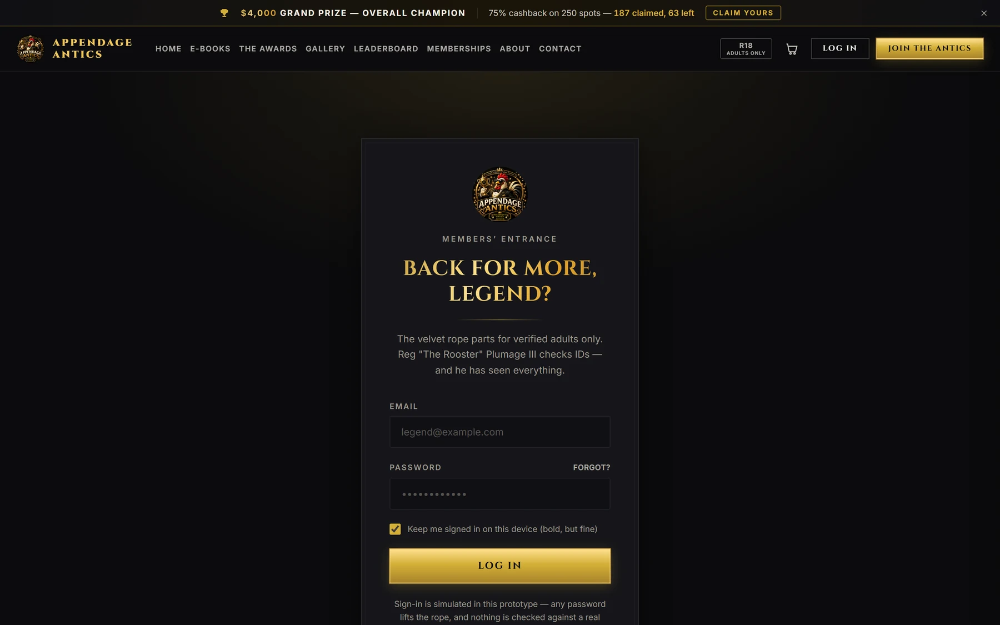
The cart
drawer, any pageBooks and memberships share one cart, which slides over the page rather than replacing it.
The reasoning is straightforward: someone browsing the series who adds Volume One is very likely to add Volume Two, and sending them to a separate cart page after each addition breaks that run. The drawer lets them add, confirm, and carry on where they were.
It also handles the one case that would otherwise cause disputes — a cart containing both a one-off book purchase and a recurring membership. Those are billed in completely different ways, and the drawer separates them and states the terms of each rather than showing a single total that quietly means two different things.
Wrong turns
404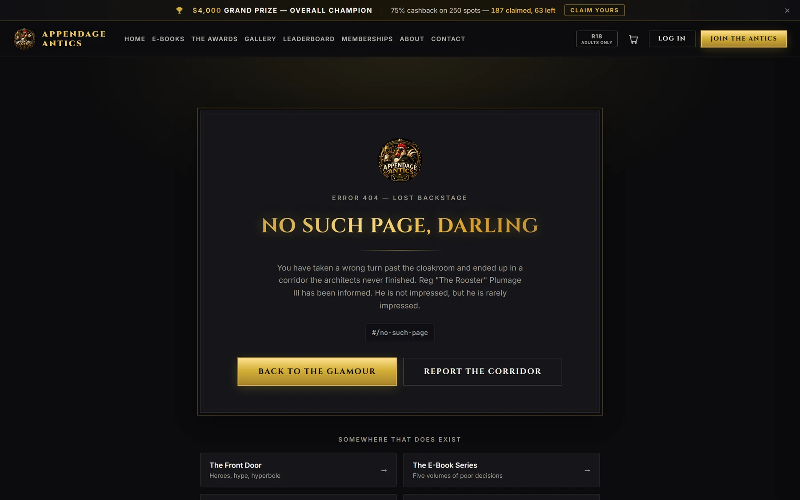
A designed 404, in the house voice, with real routes back into the site.
Worth thirty seconds of your attention for one reason: it is the page a visitor sees when something has gone wrong, which makes it the page most likely to end a visit. An error that is funny and offers three obvious ways onward recovers people that a blank "not found" loses.
The Members' Lounge
What a paying member gets for their money. Fifteen screens behind the sign-in, reached through a sidebar that sits inside the site rather than replacing it — a member is never yanked out of the world they just paid to enter.
The Dashboard
/dashboardThe member's home base — where they stand, what needs their attention, and what to do next.
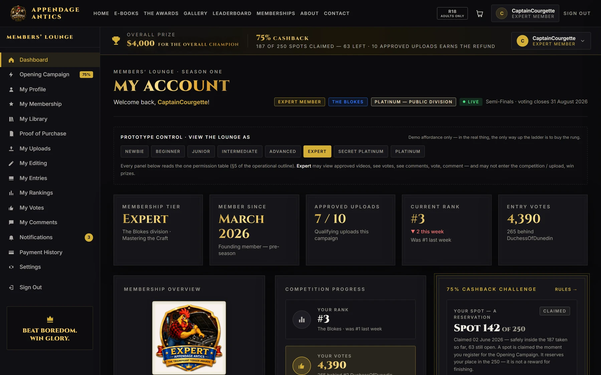
Notice what has not happened: the top navigation is still there. An earlier version of this replaced the whole site chrome when you entered the lounge, and it was disorienting — you paid to get in and the site apparently vanished. Now the lounge nests inside the site, and every sidebar link keeps you in the lounge.
The top of the page answers the three questions a member actually opens the site with: where am I ranked, how am I tracking against the campaign, and is there anything waiting for me.
The sidebar beside it is the map of everything a membership includes. Fifteen destinations is a lot, so they are grouped by what a member came to do — compete, watch and vote, read, or manage their account — rather than listed alphabetically.
It is worth scrolling that sidebar slowly, because it is the clearest single answer to "what am I actually paying for". A tier list on a sales page is a promise; this is the promise itemised.
Upload an entry
/upload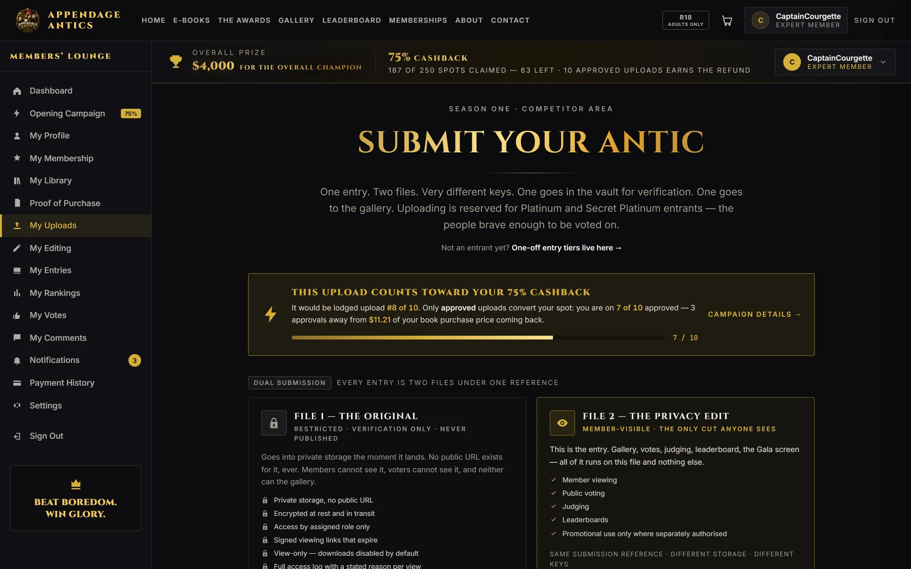
The single most important screen in the lounge, because a platform whose upload flow confuses people has no content.
There are two ways to enter, and the page makes a member choose deliberately between them rather than defaulting into one. They can submit a finished, edited video ready to go live — or they can send raw footage to your editing desk and have it cut for them. Those go to entirely different places, are handled by different people, and one of them costs money.
- Which challenge. Picked from the volume, so the entry is tied to a real brief rather than free-form.
- Which route — finished cut, or raw footage to the editing desk.
- Division. Public or Private, decided per entry.
- The rules, restated at the point of upload — own footage, verified adult, nothing explicit. This is the last moment before a member commits, and the cheapest place to prevent a rejection.
- What happens next. Moderation, then approval, then live — with the expected timeline stated so nobody is left refreshing.
Campaign progress
/dashboard/campaignThe launch offer seen from the inside: how many of your ten have been approved, and what is left to do.
The important word is approved. A member who has uploaded ten videos and had seven approved is at seven, and the page says seven — because the alternative is someone believing they have qualified, not receiving their cashback, and being entirely right to be angry about it.
It also shows the campaign's own limit — the offer is capped at the first 250 qualifying members — so a member can see whether places remain before investing the effort. Discovering that after the tenth upload would be the worst possible moment.
My Rankings
/dashboard/rankings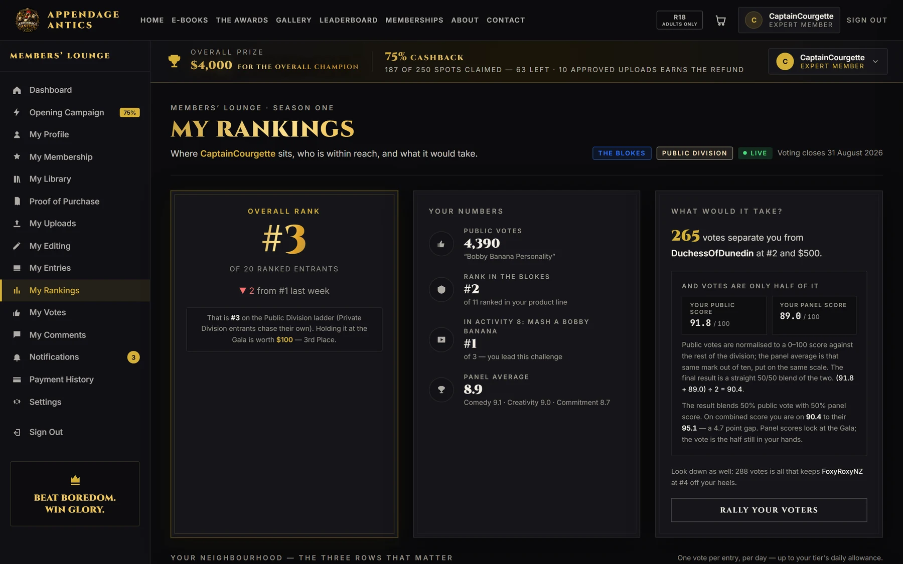
Where this member sits, how they got there, and what would move them up.
This deliberately is not the public leaderboard with a highlight on one row. That page answers "who is winning"; this one answers "how am I doing", which is a different question with different useful answers — their trajectory over time, their standing within their own division and category, and the gap to the place above.
That last number is the one members actually act on. "You are 40 votes off fourth" produces another upload. A rank on its own produces a shrug.
My Entries
/dashboard/entries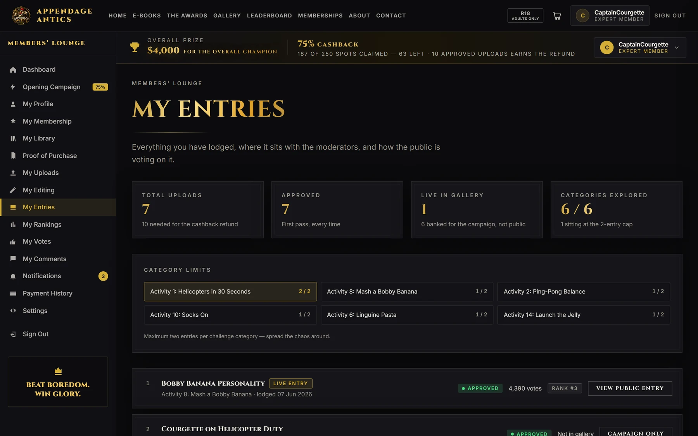
Every entry this member has submitted, with its current status and its performance.
Status is the point. An entry can be queued, in moderation, approved and live, or rejected — and a member needs to know which without asking. Uploads that vanish into an unexplained silence are the most reliable generator of support tickets on any platform of this kind.
The page also shows category limits: how many entries this member has submitted per challenge category and how many they are still allowed. Those limits exist to stop one person flooding a category, and stating them here means nobody hits the ceiling by surprise after filming.
My Votes
/dashboard/votes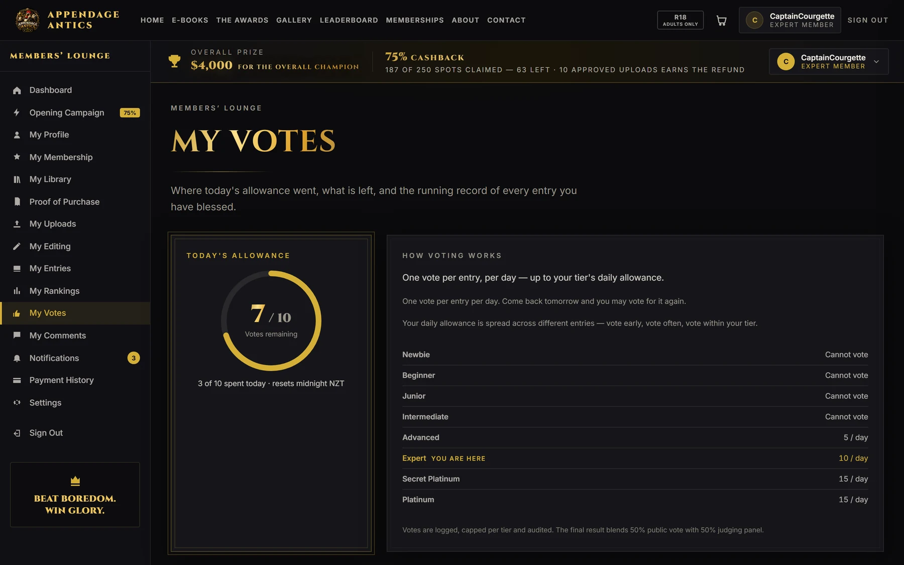
Voting is a tier perk, it is rationed daily, and this is where a member sees both facts.
The daily allowance sits at the top: how many votes this member has left today, and when it resets. Capping votes is what stops the competition being decided by whoever is most bored, and a visible allowance turns that constraint into part of the game — a member with three votes left spends them thoughtfully.
Below it, the entries they have backed and how those have gone on to place. It is a small pleasure and a real retention hook: people enjoy having spotted a winner early, and this is the page that lets them prove it.
My Comments
/dashboard/comments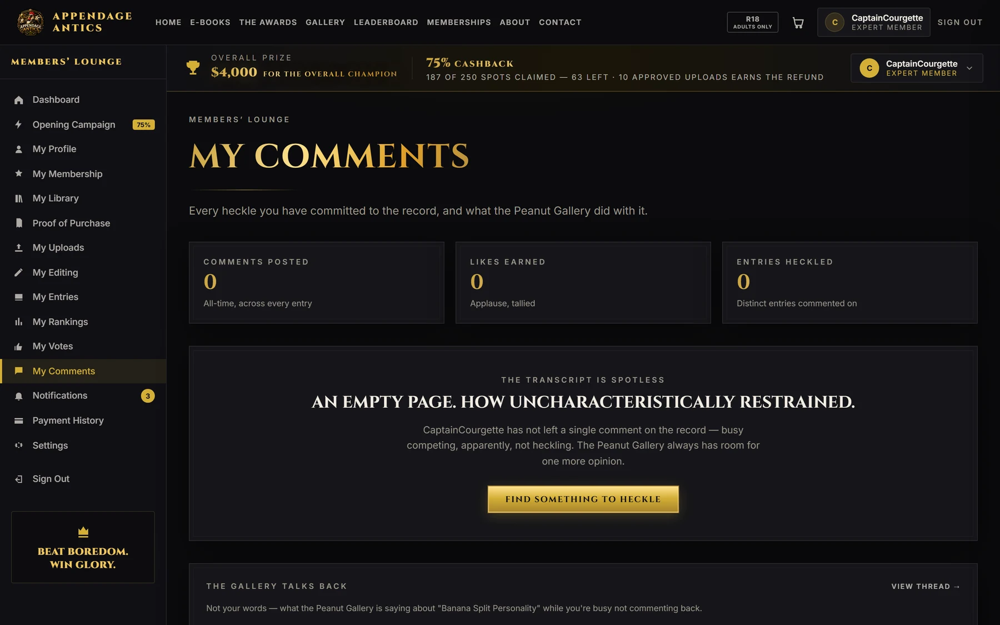
Everything this member has said publicly, and everything said back to them.
Two reasons this page exists. The practical one is that people want to find their own comment again, and hunting through a gallery for it is miserable. The commercial one is that replies bring people back — a member with an unread reply has a reason to return today rather than at the weekend.
It is also the natural place to manage one's own footprint: delete a comment, follow a thread, and see what has been moderated and why.
My Library
/dashboard/library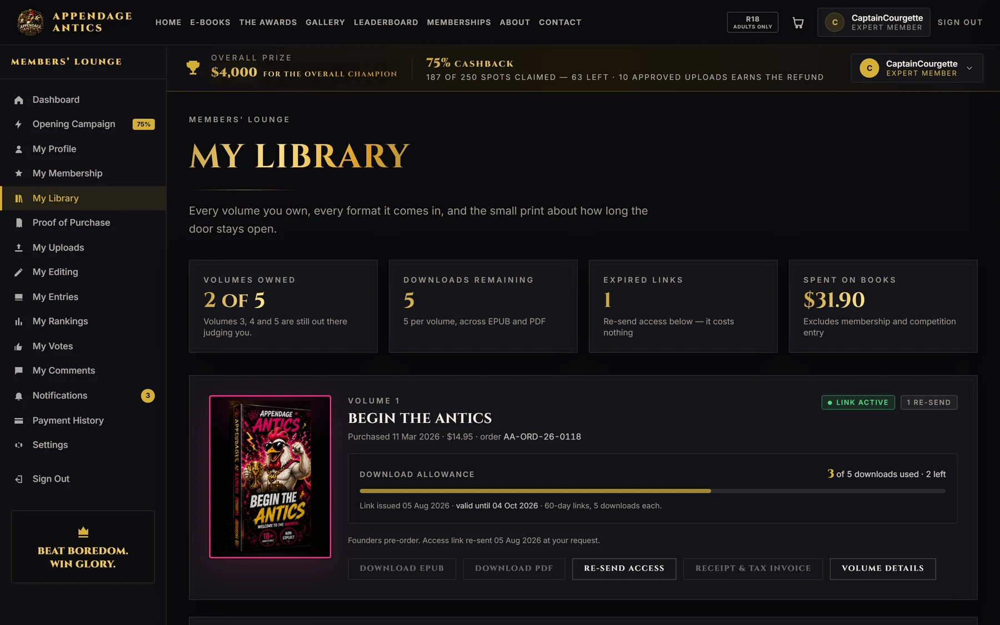
The books a member has bought, and the way they actually get them.
Selling an e-book is only half the job; delivering it reliably for years is the other half, and it is where small operations most often come unstuck. This page is the answer to every "I bought this and can't find it" email — the library is always there, always current, and re-sending access is one click rather than a support conversation.
Editing Orders
/dashboard/editing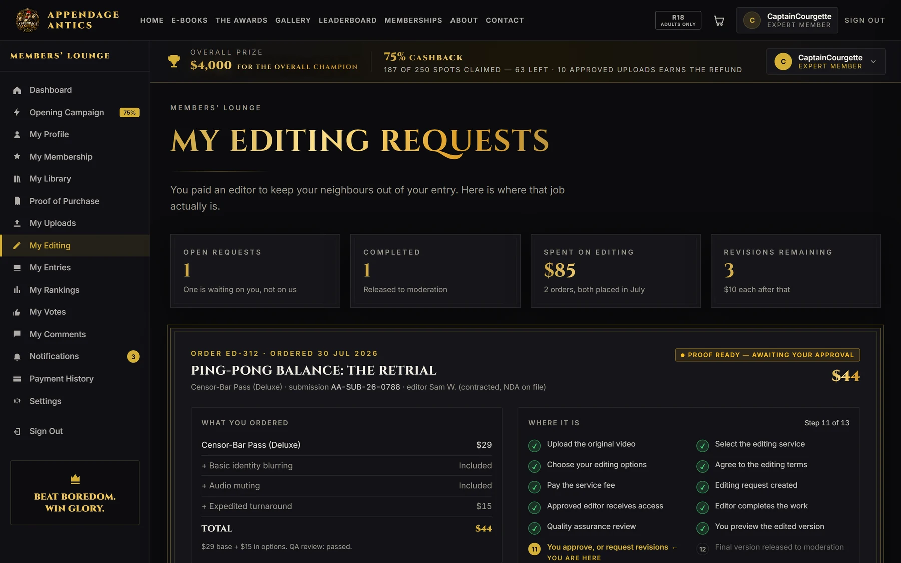
For members who send raw footage rather than a finished cut — the order, the proof, and the sign-off.
This is a real revenue line and, quietly, one of the more interesting parts of the proposition. Plenty of people will happily film something and have no idea how to edit it; charging to do that for them removes the single biggest barrier to entry and earns money doing it.
The flow is built around one thing: a member must approve the cut before it goes anywhere. They see the proof, and they either approve it or request a revision with notes. Publishing someone's footage in a form they had not signed off would be a serious breach of trust on a platform where the footage is personal.
My Membership
/dashboard/membership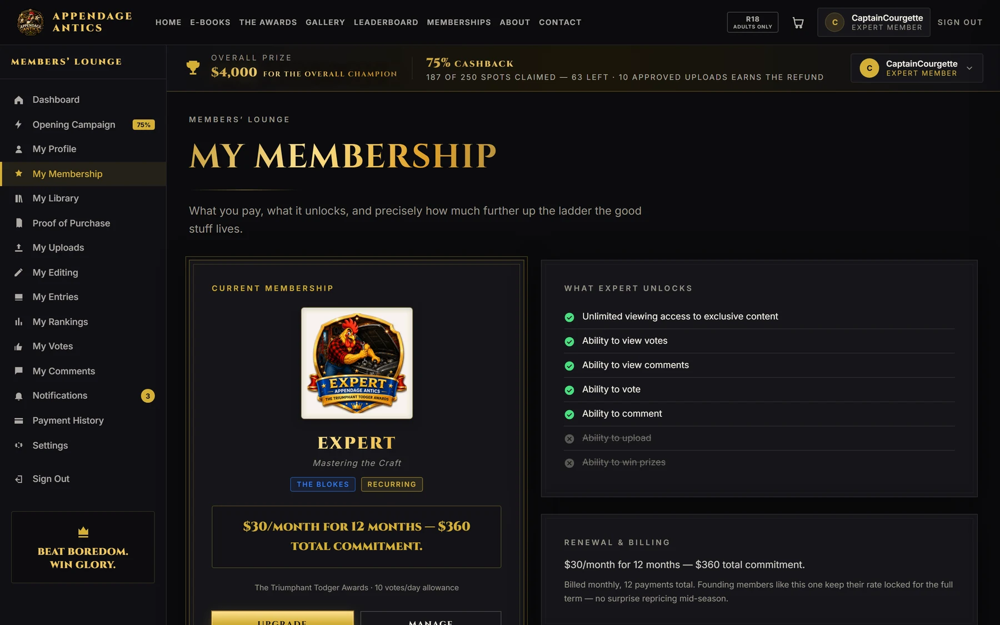
What this member is paying for, what it gets them, and what the next tier up would add.
The page lists the perks currently in force rather than the tier's marketing summary — including any that are inactive and why. A member who believes they are owed something they are not is a dispute waiting to happen, and the fix is showing the real state rather than the brochure.
Upgrading is presented as a comparison against what they already have, not as a fresh pitch. Someone already paying does not need the platform sold to them again; they need to know what changes and what it costs.
Payment History
/dashboard/payments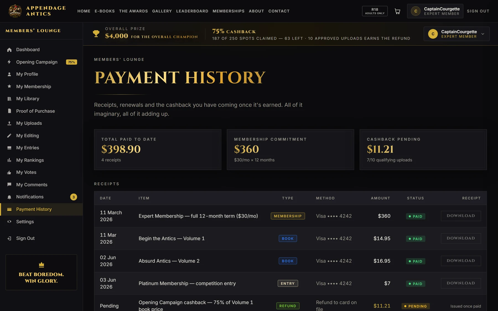
Every payment this member has made, what it was for, and what it totals.
Unglamorous and worth more than it looks. Most billing disputes are not fraud — they are somebody failing to recognise a line on a bank statement. A page that says plainly what each charge was, on what date, for which tier or book, resolves that before it reaches you or their bank.
Proof of Purchase
/dashboard/proof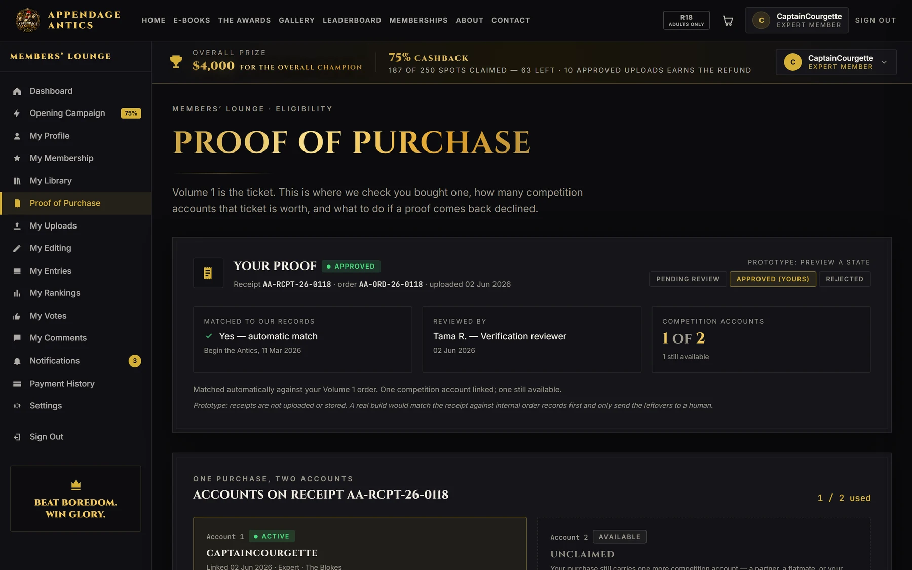
The screen that turns "buy the book to enter" from a slogan into a rule.
A member's purchase of Volume One is what makes them eligible to compete, so that purchase has to be verifiable. This page shows their eligibility status, the purchase behind it, and — where the purchase was made somewhere the platform cannot see directly — how to submit evidence of it.
It is also where the two-accounts-per-purchase rule is actually administered. One purchase entitles a buyer to link a second account, and this is where that link is made and where both accounts can see it has been made. Without a screen like this, the rule is a promise on a marketing page that nothing enforces.
Notifications
/dashboard/notifications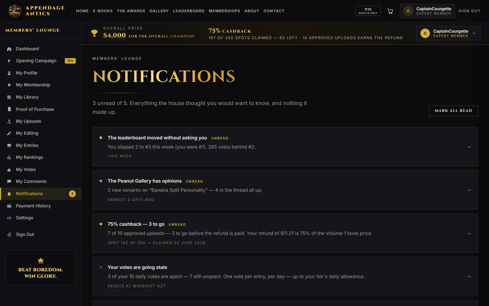
One stream for everything that has happened to this member since they last looked.
Entry approved, entry rejected, someone voted, someone replied, rank moved, staff got in touch. These are the events that bring people back, and collecting them in one place means a member has a single thing to check rather than four pages to sweep.
Rejections are included and explained rather than delivered silently. A member whose entry was declined without a reason assumes bias; one who is told which rule it fell foul of usually just refilms it.
My Profile
/dashboard/profile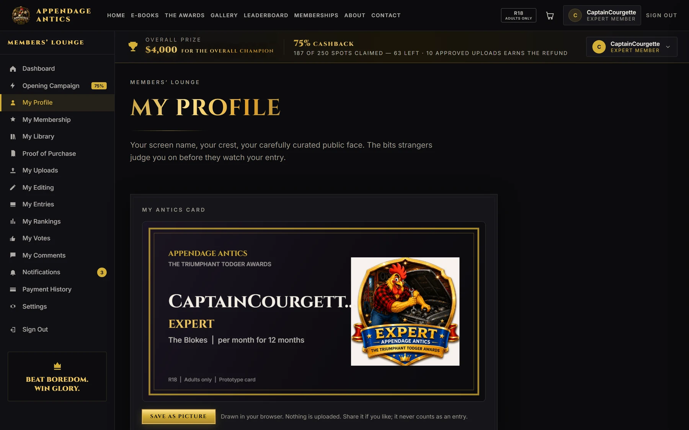
The identity a member presents to everyone else, and precise control over how much of it there is.
Screen name, division, tier, and their record — the things that appear beside their name on an entry or a leaderboard row. On most platforms this page is an afterthought. Here it is load-bearing, because a good number of your members will be weighing up exactly how visible they are willing to be.
So the page is explicit about what is public rather than leaving it to be inferred. Someone in the Private Division needs to be certain, on a screen they can look at, that what they think is sealed is sealed.
Settings
/dashboard/settings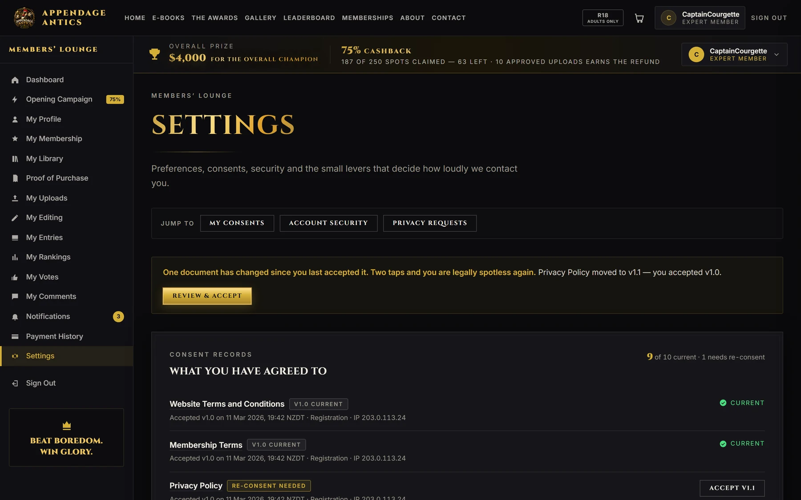
Account, privacy, notifications, and the serious options — grouped so the serious ones are unmistakable.
Everyday settings sit at the top: email address, password, which notifications to receive, what appears publicly. Below them, deliberately separated, the decisions that are hard to undo — deactivating, deleting, and requesting a copy of one's data.
That separation is intentional. Changing an email preference and deleting an account should not look like the same class of action, and on an R18 platform a member deleting everything is a request that has to work properly and visibly.
The Control Room
The staff side — twelve screens covering moderation, judging, prizes, support, money and the promotional machinery. This is deliberately a separate world with its own plainer chrome, because the people using it are working, not browsing.
Staff overview
/adminThe morning screen: what came in overnight, what is waiting on a decision, and where the numbers sit.
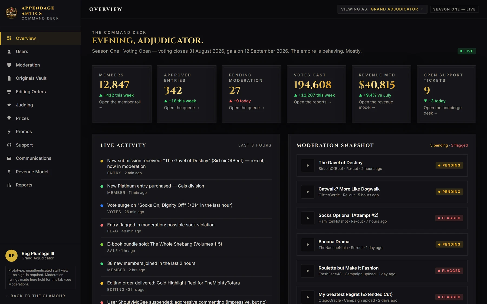
The whole staff side runs on a deliberately restrained version of the brand: the same typefaces and the same dark ground, but far less gold and far more table. A moderator working a queue for two hours does not need a shimmering hero; they need to read forty rows without eye strain and hit the right button every time.
The overview itself is a triage screen: what is in each queue, what is overdue, and the day's headline numbers. Someone opening it should know within seconds where to go first.
Members
/admin/users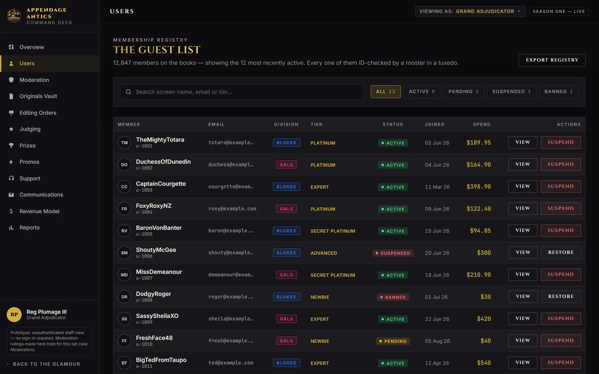
Everyone on the platform, searchable, with the full picture of any one of them a click away.
The list gives the operational essentials — screen name, tier, division, status, activity. Opening a member gives the rest: their entries, their payments, their reports, their history with the platform.
That detail view is what makes a support conversation possible. Answering "why was my entry rejected and why can't I vote" requires seeing everything about one person at once, and hunting across five screens to assemble it is how support queues grow.
Moderation queue
/admin/moderation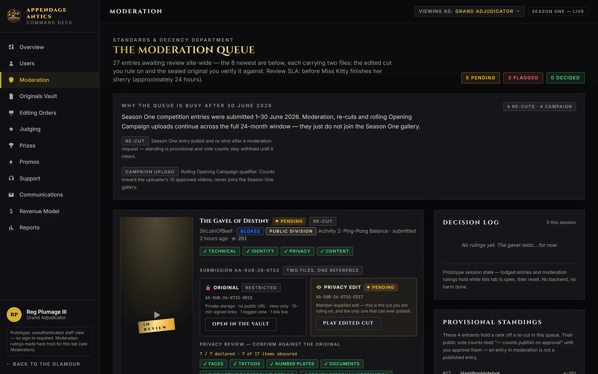
Nothing reaches the gallery without passing through here, and this is the screen that determines whether the platform is viable.
Every upload is reviewed before publication. Not sampled, not reviewed after complaint — every one. On an R18 user-generated platform that is not a quality-control preference, it is the condition on which payment processors and hosts will work with you at all.
- The queue, ordered by wait time, so nothing sits forgotten.
- The entry in context — which challenge, which member, which division, and their history.
- Approve or reject with a reason, since the reason is what the member is told and what an appeal is judged against.
- An audit trail — who decided what, and when.
Originals Vault
/admin/originals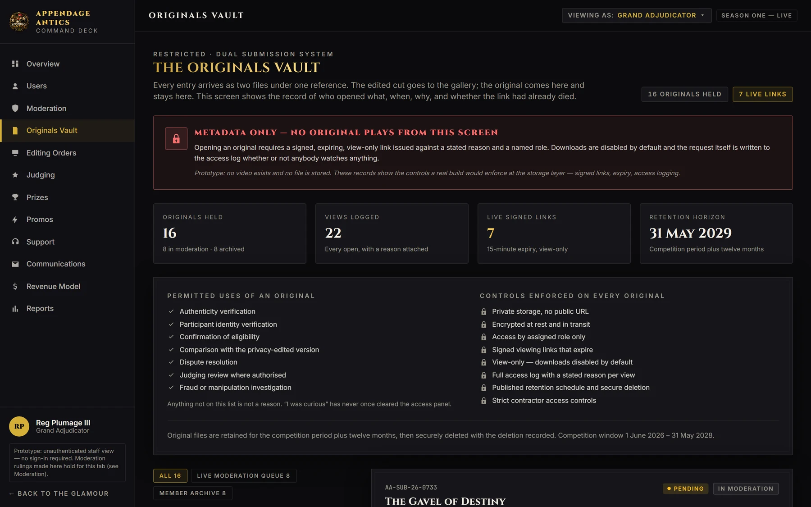
Where raw, unedited footage lives — and the most tightly controlled screen in the build.
Members who use the editing service send in original footage. That material is more sensitive than anything that ever reaches the gallery: it is unedited, uncensored, and was handed over on the understanding that it would be cut before anyone saw it.
So the vault treats it accordingly. Access is restricted, every view is logged, and downloads are disabled by default — taking a copy off-platform is a written request to a named person, not a button. That is deliberately inconvenient, because convenient access to material like this is precisely how platforms end up in the news.
Editing Desk
/admin/editing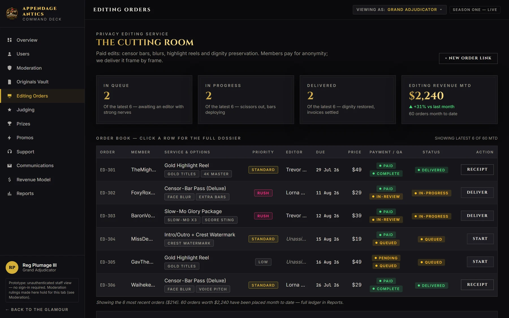
The staff side of the editing service — the work queue, who is doing what, and where each job has got to.
Each order moves through the same stages: received, assigned to an editor, cut, sent to the member as a proof, and either approved or returned for revision. The member sees their half of that on their own Editing screen; this is the other half.
Turnaround time is the thing being managed here. Editing is the one paid service on the platform where a member is waiting on a person rather than a queue, and a service people have paid for and are waiting on generates complaints faster than anything else.
Judging
/admin/judging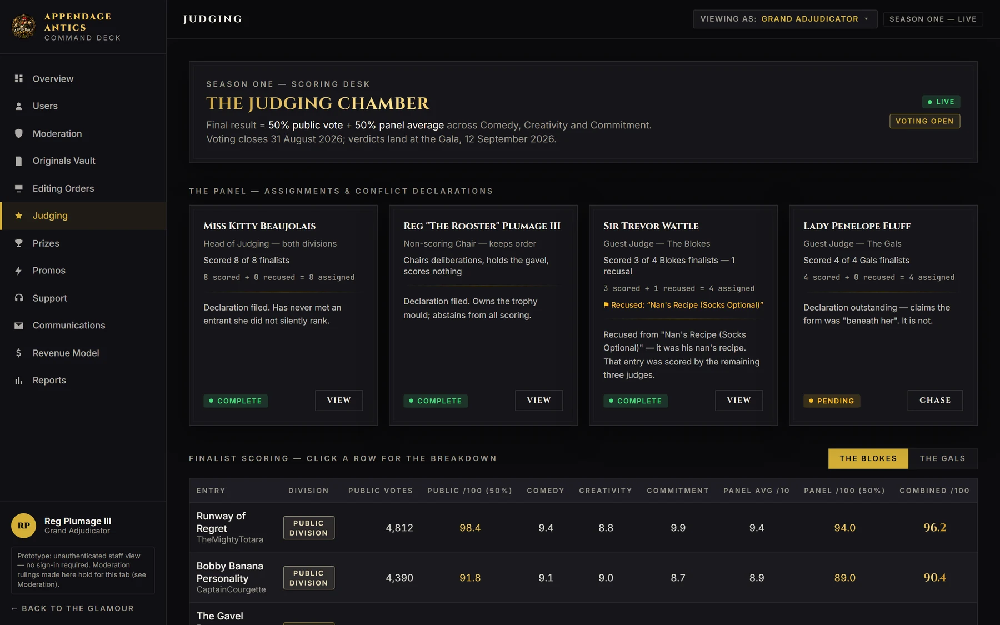
Where entries are scored against your six judging criteria — and where the competition's credibility is either earned or lost.
Judges score each entry against the same six criteria, and the panel's scores are recorded separately rather than merged into an unexplained number. With real money attached, "why did that one win" has to have an answer that survives being asked publicly by someone who came second.
- Scoring against the six criteria, per judge, per entry.
- Recusal. A judge with a connection to an entrant is recorded as recused rather than quietly skipping — a documented conflict is a defence, an undocumented one is an accusation.
- Sealing. Scores are locked before results are published, so nothing can be adjusted after the outcome is known.
- Panel scores held back until the shortlist publishes, so early scores cannot steer the public vote.
Prizes
/admin/prizes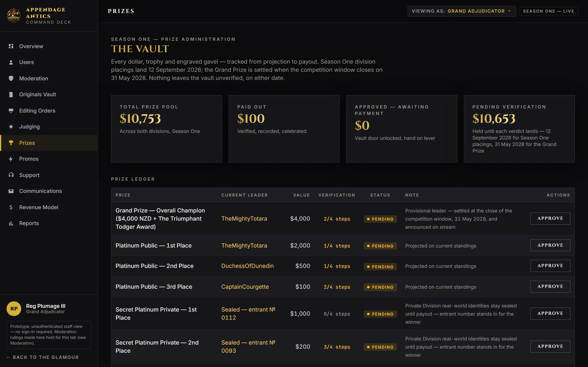
Every prize on the board, who is in line for it, and what has to be checked before it is paid.
Prizes are the promise the whole competition rests on, so this screen is built around verification rather than celebration. Each pending prize shows how many verification steps have been completed out of how many are required — eligibility, identity, entry validity, no outstanding reports — and the payment does not proceed until they are done.
Provisional leaders are labelled as provisional. Where a prize is a pooled refund rather than a named winner, it says so. Both distinctions matter the moment somebody screenshots this and asks why they have not been paid.
Promotions
/admin/promos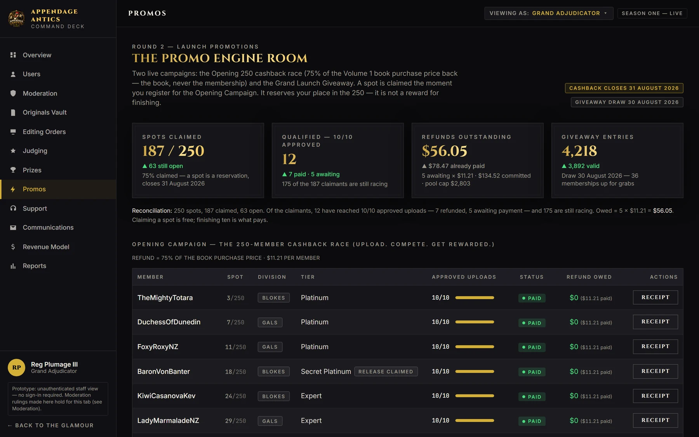
The operational side of the launch offer and the giveaway — who has qualified, who has been paid, and how many places remain.
The cashback campaign is a queue with a hard limit: the first 250 qualifying members. That means someone has to know, at any moment, exactly how many places are left and who is next in line — and it has to be the same number members are being shown, or the complaints write themselves.
The giveaway is handled here too, including running the draw, with the pool of prizes and the winners recorded. Both mechanics are the kind of thing that gets run out of a spreadsheet at first and becomes unmanageable at precisely the moment they succeed.
Reports
/admin/reports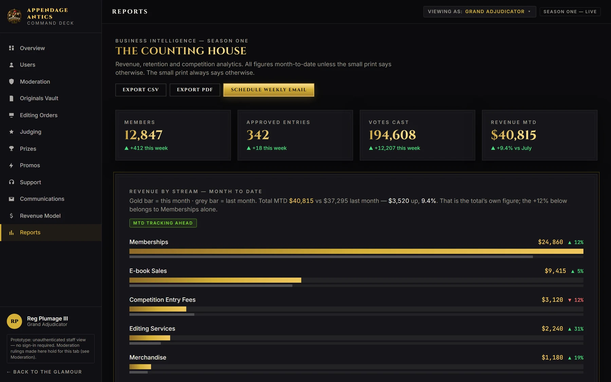
When a member reports content or another member, it lands here — and every one gets an answer.
Reports are triaged by seriousness, because they are not equivalent. Someone finding an entry unfunny and someone alleging that footage was published without consent both arrive through the same form and need very different response times.
Each report carries its history: what was reported, by whom, what was decided, who decided it, and when. On a platform of this kind that record is not bureaucracy — it is the evidence that you acted, and the thing you would be asked for first if anyone ever came asking.
Support Desk
/admin/support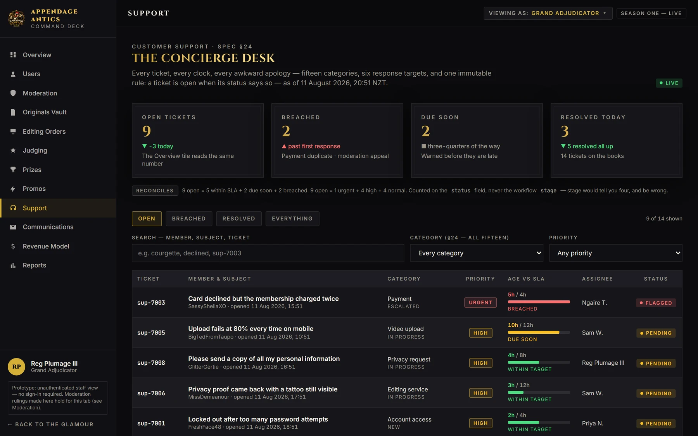
Every enquiry from the contact form, as a numbered ticket measured against the response target published on the public site.
This is the other end of the Contact page. The targets promised out there are shown in here as a clock: how long each ticket has been open, which are approaching their target, and which have missed it.
Tickets are categorised the same way members categorise them — billing, technical, moderation appeals, competition queries — so the desk can see at a glance where the volume actually comes from. That pattern is genuinely useful information: a spike in billing tickets usually means something on the Memberships page is unclear, not that members have become confused.
Communications
/admin/communications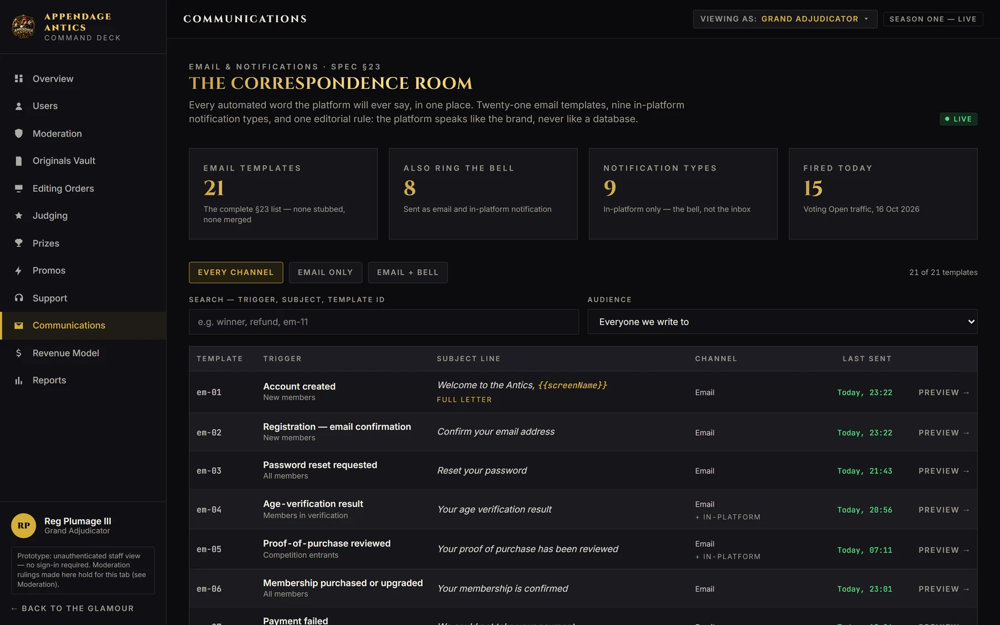
A catalogue of every automated message the platform sends — what triggers it, who receives it, and what it says.
Welcome emails, purchase confirmations, entry approved, entry rejected, payment taken, membership expiring, cashback qualified, prize won. Dozens of messages, each fired by an event, each landing in someone's inbox with your name on it.
Collecting them in one place makes the tone consistent and the whole set reviewable. Automated email is where a brand voice quietly dies: the site is funny and the receipt reads like a parking fine. It is also the only way to answer "what exactly do we send people, and when" without reading the source code.
Revenue Model
/admin/revenue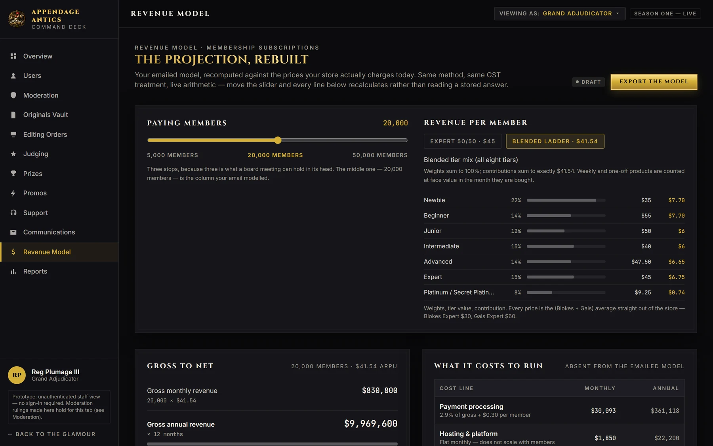
Your own revenue model, built into the platform as a live screen rather than left in a spreadsheet.
Membership revenue by tier and division, book sales, editing income, set against the campaign refunds and the prize commitments. It is your model, using your figures — rendered so the numbers move when the inputs do.
What's real, what's illustrative
Worth being precise about, so nothing in this tour is mistaken for something it is not.
Real
- Every screen shown here exists and can be clicked through, in any browser, right now.
- The structure — how the books, competition, memberships and staff tools relate — is worked out in full, not sketched.
- Your content is used as supplied: the brand, both award shows, the book titles, the tier names and prices, the prize board, the division structure, the entry requirements, the judging criteria and the About copy.
- The arithmetic is consistent. Tier totals, prize amounts, campaign figures and leaderboard scores all agree with each other, across every page they appear on. Two independent reviewers went looking for contradictions specifically.
Illustrative
- Every person. All members, entrants, commenters and staff are invented. None of them exist.
- Every statistic. Member counts, votes, sales figures and rankings are plausible fabrications chosen to make the screens legible.
- All 49 comments, and all entry titles are ours, written to demonstrate tone. The six challenge categories are now six of your real Volume One activities.
- The New Zealand setting is an assumption, not a decision you have made.
Not built at all
- Payments. Carts total correctly; no money moves and no card details are collected. An R18 platform needs a processor willing to take that business, at rates that reflect it.
- Video. No upload, storage, transcoding or playback. This is the largest ongoing cost in the whole venture and the one that grows with success.
- Identity and age verification. Self-declaration stands in for what would be a third-party service.
- Email. The message catalogue lists what would be sent; nothing sends.
- Persistence. Nothing is saved. Refresh the page and every decision resets.
Where this could go next
The prototype's job was to make the concept concrete enough to make decisions about. Here is what it has surfaced.
Building this out revealed that the venture is really two businesses with very different cost profiles. Selling an e-book series is a modest, well-understood operation. Running an R18 user-generated video competition is a substantially larger one, and almost all of its cost sits in the three things this prototype could not build: payment processing at high-risk rates, age and identity verification, and video storage and streaming — plus the moderation effort the Control Room makes visible.
That is worth knowing before committing, and it points at an obvious sequencing question: whether the books go first to prove the audience, with the competition platform following once there is a population to compete. Mark will take you through that properly, with numbers.
Decisions this raised that are yours
- Four places where your store prices and your tier tables disagree.
- One tier that currently offers fewer perks than a cheaper one, and another division where the pricing runs the opposite way.
- Volume Five carrying two different titles across your materials.
- Whether New Zealand is the target market or a placeholder.
- The three gaps in the revenue model noted on the previous screen.
Assets that would sharpen it
- Text-free re-exports of the hero artwork — the current versions have headlines and a painted-on button baked into the image.
- Crest and badge artwork with transparent backgrounds.
- Real emblems for each division, rather than the shared mark standing in for both.
- Community photography, for the sections that currently lean on illustration.
None of these are obstacles. They are the ordinary list of things that turn a convincing prototype into a launchable product, and the fact that the list is this short is the most encouraging thing in this document.
Your turn — a few questions
Everything above is what we could work out on our own. The rest needs you.
Before We Build →
A short set of questions, in the same place as this document. Some are quick confirmations of the decisions listed above, where your own material pointed two ways and we had to choose. A dozen or so genuinely decide the shape of the whole build — the first four especially.
The second half is the honest account of what it takes to run a platform like this: payment processing, age verification, the consent rules around video, and a couple of points in your own revenue figures we would rather raise than quietly work around. None of it is meant to put you off. It is the material that is much cheaper to face now than in month nine.
You can type your answers straight into the page and send them from there.